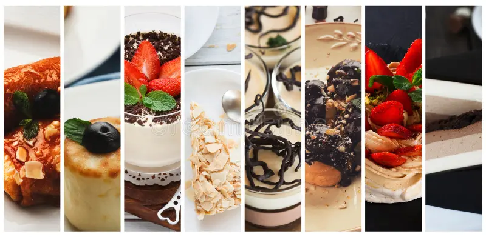
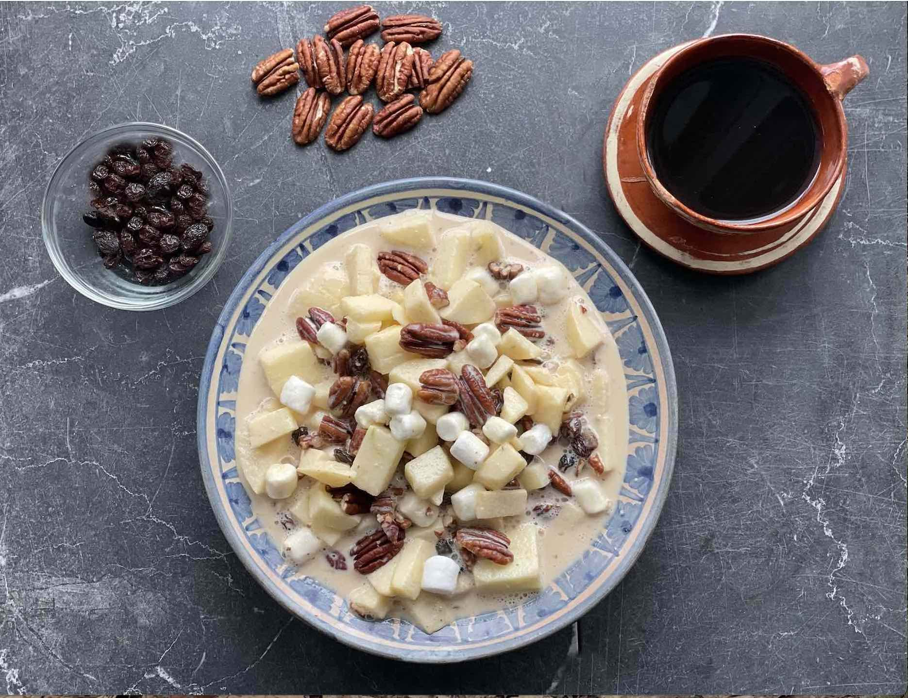
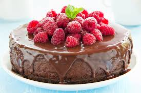
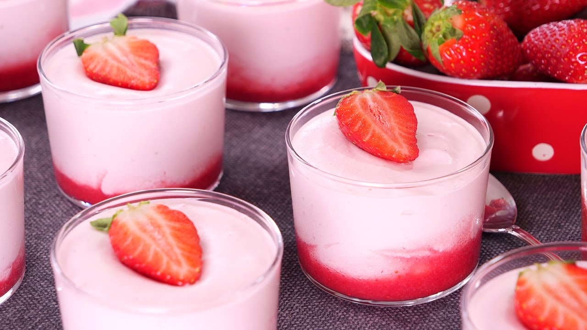

<!DOCTYPE html>
<html lang="en">

</html>

<head>
    <meta charset="UTF-8">
    <meta name="viewport" content="width=device">
    <title>Recetas de postres</title>
    <link rel="stylesheet" href="ejercicio-html-css.css" </head>


<body>

    <div class="imagen-main">
        
    </div>
    </div>

    <h1>Menu de recetas de postres</h1>
    </div>


    <div class="intro">

    </div>

    <nav class="navigation">
        <ul>
            <li><a href="#"> Postre de manzana </a></li>
            <li><a href="#"> Pastel de chocolate </a></li>
            <li><a href="#"> Tarta de fresas </a></li>
        </ul>
    </nav>

    <div>
        <h2>Postre de Manzana </h2>
        <p>El postre de manzana es una opción clásica y deliciosa, ideal para cualquier ocasión. Su combinación de
            dulzura y acidez
            lo convierte en un favorito de todos.</p>
        

        <h3>Ingredientes: </h3>
        <ul>
            <li>4 manzanas </li>
            <li>100g de azúcar
            </li>
            <li>1 cucharadita de canela </li>
            <li>50g de mantequilla </li>
            <li>1 masa de hojaldre </li>
            <li>1 huevo batido (para dorar) </li>
        </ul>
        <h3>Preparación: </h3>
        <ol>
            <li>Pelar y cortar las manzanas en rodajas finas. </li>
            <li>En un bol, mezclar las manzanas con el azúcar y la canela. </li>
            <li>Extender la masa de hojaldre sobre una bandeja de horno. </li>
            <li>Colocar la mezcla de manzana sobre la masa. </li>
            <li>Doblar los bordes y pincelar con el huevo batido. </li>
            <li>Hornear a 180°C durante 25-30 minutos. </li>
            <li>Servir caliente y disfrutar.</li>
        </ol>
    </div>


    <div>
        <h2>Pastel de Chocolate</h2>
        <p>El pastel de chocolate es un postre irresistible para los amantes del cacao. Su textura esponjosa y su sabor
            intenso
            hacen que sea un placer para el paladar.</p>
        
        <h3>Ingredientes: </h3>
        <ul>
            <li>200g de chocolate negro </li>
            <li>150g de azúcar </li>
            <li>3 huevos </li>
            <li>100g de mantequilla </li>
            <li>100g de harina</li>
        </ul>
        <h3>Preparación: </h3>
        <ol>
            <li>Derretir el chocolate con la mantequilla. </li>
            <li>Batir los huevos con el azúcar hasta obtener una mezcla espumosa. </li>
            <li>Agregar la harina y el chocolate derretido. </li>
            <li>Verter la mezcla en un molde y hornear a 180°C por 30 minutos. </li>
            <li>Dejar enfriar y servir. </li>
        </ol>
    </div>

    <div>
        <h2>Tarta de Fresas </h2>
        <p>La tarta de fresas es un postre fresco y ligero, perfecto para los días cálidos. Su combinación de fresas y
            crema la
            convierte en una opción deliciosa y elegante. </p>
        
        <h3>Ingredientes: </h3>
        <ul>
            <li>200g de fresas </li>
            <li>150g de azúcar </li>
            <li>1 base de tarta </li>
            <li>200ml de nata para montar </li>
            <li>1 sobre de gelatina de fresa</li>
        </ul>
        <h3>Preparación: </h3>
        <ol>
            <li>Colocar la base de tarta en un molde. </li>
            <li>Batir la nata con el azúcar y extender sobre la base. </li>
            <li>Colocar las fresas cortadas encima. </li>
            <li>Preparar la gelatina según instrucciones y verter sobre las fresas. </li>
            <li>Refrigerar por 2 horas antes de servir. </li>
        </ol>
    </div>

</body>
